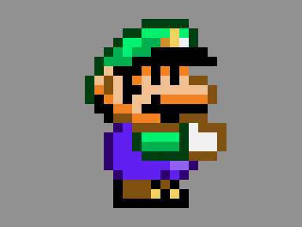

Portfolio
Emulator:
An interactive emulator for the DCPU-16. The DCPU-16 is a fictional 16 bit CPU designed by Markus (Notch) Persson for the game 0x10c. Work on the game has been discontinued, but there was a lot of interest in this virtual chip when the game was originally announced.
The emulator is powered by my own C library, LibDCPU16, which has been compiled into a WebAssembly module to run in the browser.
Voxel Editor:
Voxel Editor was created to be intuitive for an average gamer to design voxel models in. The editor features a first person camera and intuitive controls. The editor exports models in the .vox format making it compatible with other voxel editors. Additionally the editor can procedurally generate terrain using simplex noise.
Stardew Valley Patcher:
Stardew Patcher is a C# application that modifies the MSIL bytecode of Stardew Valley to fix several bugs with the 1.03 release. I decompiled the game and used stack dumps to track down and fix several bugs I encountered.
- The public release accumulated over 10,000 downloads.
- The modified executable is created in memory without needing to overwrite any game files.
- The patch was released shortly after the game launched and several days before an official patch was available.